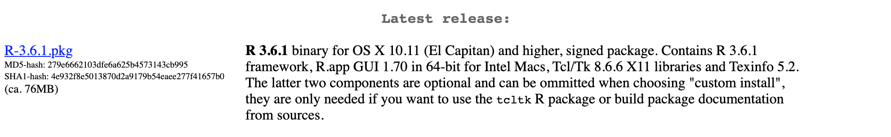
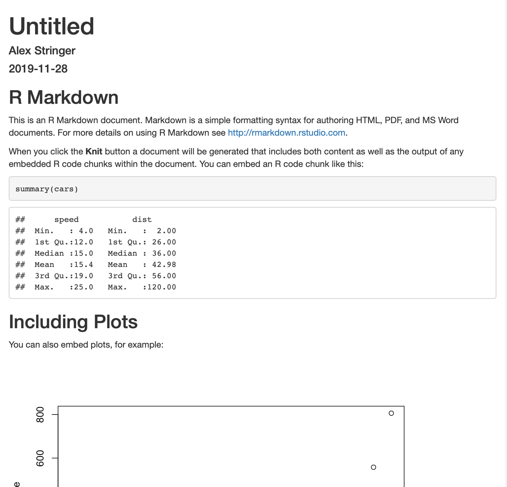
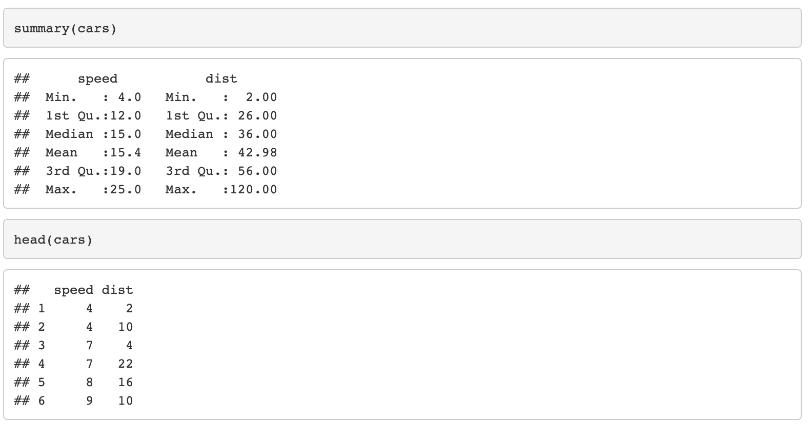
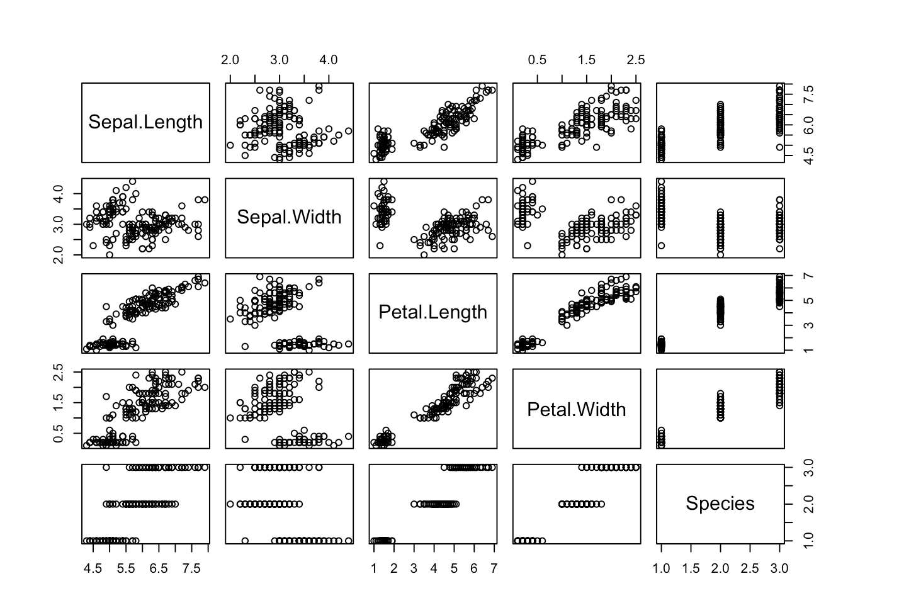

Chapter 13 Installing R and RStudio
This supplementary document contains a guided tutorial on how to install R
and RStudio, and create a simple document with RMarkdown. It is your responsibility to have access to a computer on which
you can use these tools. We want to help! However, us providing this help should in
no way be interpreted as us taking on the responsibility of getting these tools
working. In particular, you have an assignment due in the second week of classes
that requires these tools, and it is 100% your responsibility to complete it on time.
Most of these screenshots are taken from https://rstudio.com/products/rstudio/.
13.1 Installing R
R is the scientific computing language that we will use in this course to perform
statistical compuations– reading and manipulating data, performing scientific
computations, and creating automated reports.
Install R on your Windows, MacOS or Linux platform by going to https://cran.rstudio.com/. Choose the correct
link based on your operating system:

This tutorial proceeds with Windows and Mac; if you’re a Linux user (good for you!), I’m assuming you’re familiar with how to install software like this.
Windows: click “base”:
Mac: scroll down and click on the link for the “latest version”. At the time of this writing, it’s 3.6.1, but don’t worry if it’s increased when you’re doing this.

Follow the instructions for your operating system to install the software. There
should be a new icon for R, like this on a Mac:

and similar on Windows. Click it to open the software. You should see something like:

on a Mac, and again similar on Windows. Type print("Hello world!") in the console and press Enter:

If it runs without errors, good job, you’ve installed R!
13.2 Installing RStudio
R is the underlying platform that executes code that you write and returns results. However, you won’t usually use R directly. You will use R through RStudio, the most popular Integrated Development Environment (IDE) for R.
You can download RStudio for your platform here. Select RStudio Desktop, free version, and make sure to install the correct one for your platform. I think this is displayed automatically; when I go there on my Mac, I see:

Download the installation file and follow the instructions for your system. An icon will appear:

Click this icon to open RStudio. You should see something like this (note: I have set my favourite visual settings, so yours will look slightly different):

The IDE contains four panels. The two important ones for now are:
The console. You can type
Rcode here, and pressEnterto run it. It is the same as the console fromRthat you saw in the previous step.The editor. This is where you will write your programs which involve more than one command– so, all of your programs. This is where I am currently writing this tutorial! It is just a text editor. You can write code, highlight it, and then press
Cmd+EnterorShift+Enterto run it. Give it a try: click the+icon in the top right corner ofRStudio, and click “R script”:

A blank script will open. Type print("Hello World!"), highlight the code, and press Cmd+Enter (mac) or Ctrl+Enter (windows):

If this works, you are successfully using RStudio!
13.3 Using RMarkdown
One of the real powers of using R and RStudio is the ability to automatically create typeset documents containing the results of running your code combined with text.
First, make sure the rmarkdown package is installed. Open RStudio and in the Console, type install.packages("rmarkdown"). The rmarkdown package will be installed.
Now, click the + icon in the top-right corner, and select “R Markdown”:


Leave all the default settings as they are. You should see a new script open up, prepopulated with some text and code:

Click anywhere in this document (so the cursor is in the editor) and press Cmd+Shift+K or Ctrl+Shift+K. You’ll be prompted to save the script; do this, and wait a moment, and then a document will magically be created and appear in the Viewer pane:

This document is itself a tutorial for using RMarkdown. Read this; it explains how to add text, and code, right in the editor, and then magically create a report. When you change the code or the text, you create the report again, and everything is typeset properly. Not only does this save you time, but it ensures that all your output matches the code that was used to create it, reducing human error. This notion is part of the broader concept of reproducibility, which is very important in modern scientific practice.
As a test of your use of RMarkdown, try to add the following three items to this report:
The title “My First RMarkdown Report”. Look up at the top where it says “title”.
The first few rows of the
carsdataset. You can get this with thehead(cars)command. My output looks like:

- A pairs plot of the
irisdataset. You can add this withpairs(iris). My output looks like:
